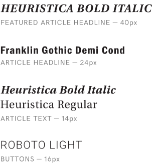

As an exercise in responsive design I redesigned the landing page for the New York Post. My inspiration came from newspaper layouts of the 1940’s, where content was crammed into an unending series of columns. My goal for this project was to create a fully responsive, multi-column layout that was readable across all devices.
Tools
- Illustrator
- HTML
- CSS
- jQuery
- SASS
Skills
- Web Design
- Responsive Design
- UI / UX
Layout
As an exercise in responsive design I redesigned the landing page for the New York Post. My inspiration came from newspaper layouts of the 1940’s, where content was crammed into an unending series of columns. My goal for this project was to create a fully responsive, multi-column layout that was readable across all devices.
Typography
As an exercise in responsive design I redesigned the landing page for the New York Post. My inspiration came from newspaper layouts of the 1940’s, where content was crammed into an unending series of columns. My goal for this project was to create a fully responsive, multi-column layout that was readable across all devices.
Colour Pallete
As an exercise in responsive design I redesigned the landing page for the New York Post. My inspiration came from newspaper layouts of the 1940’s, where content was crammed into an unending series of columns. My goal for this project was to create a fully responsive, multi-column layout that was readable across all devices.
Yellow
HEX #E1B451
RGB 255, 180, 10
Off Yellow
HEX #C09945
RGB 192, 153, 75
Black
HEX #231F20
RGB 35, 31, 32
Responsive Web Design
As an exercise in responsive design I redesigned the landing page for the New York Post. My inspiration came from newspaper layouts of the 1940’s, where content was crammed into an unending series of columns. My goal for this project was to create a fully responsive, multi-column layout that was readable across all devices.